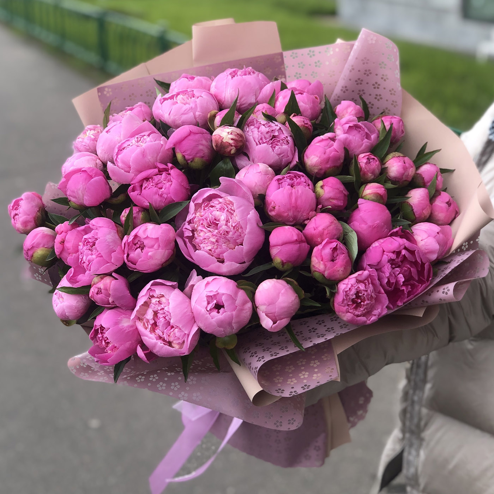
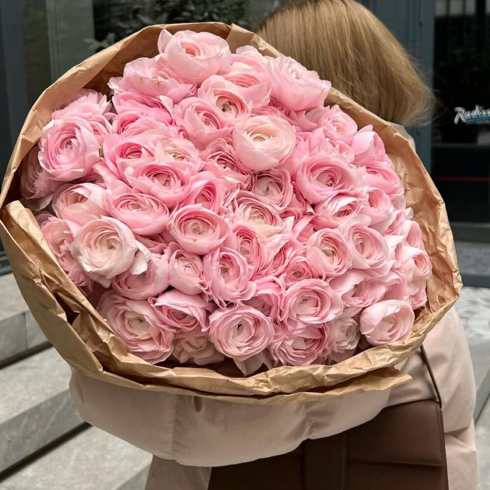
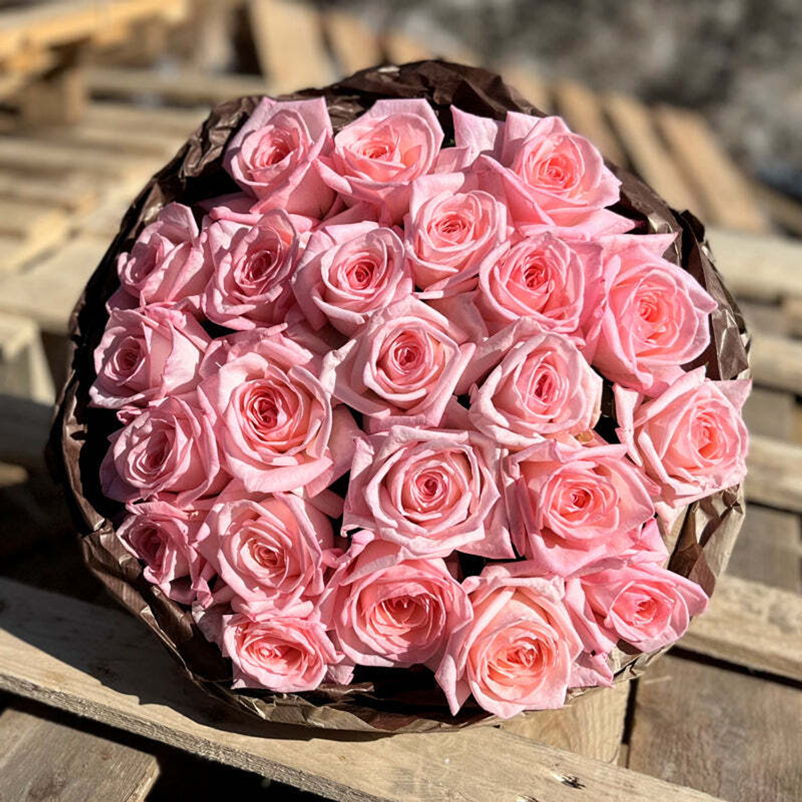
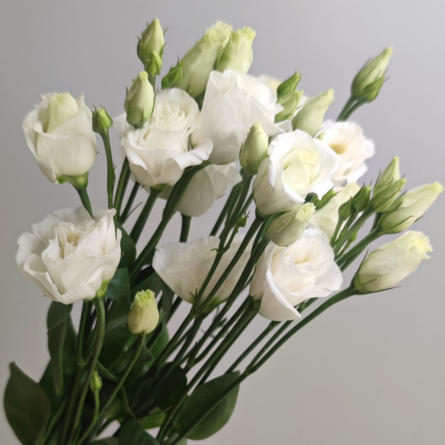

Пионы
Род травянистых многолетников и листопадных кустарников.
Единственный род семейства Пионовые, ранее род относили к семейству Лютиковых.
Пионы цветут в конце весны, ценятся садоводами за пышную листву, эффектные цветы и декоративные плоды.

Ранункулюс
Лю́тик азиа́тский, или Лютик садовый — травянистое растение семейства Лютиковые,
вид рода Лютик, происходящее из Восточного Средиземноморья, Юго-Западной Азии, Юго-Восточной Европы и Северо-Восточной Африки

Розы
собирательное название видов и сортов представителей рода Шипо́вник, выращиваемых человеком и растущих в дикой природе.
Хризантема
род однолетних и многолетних травянистых растений семейства Астровые,
или Сложноцветные, близкий к родам Тысячелистник и Пижма, куда нередко перемещаются многие виды хризантем.

Эустома
род растений семейства Горечавковых.
Название происходит от греческих корней эу и стома. Культивируемые цветы, относящиеся к этому роду, часто имеют название лизиантус